Most guys say "we should do something together sometime."
Then life happens. This is the opposite of that. We are putting a date on the calendar a year out and building something worth remembering—not because it is easy, but because years from now we will remember the first fish, the shelters, the rain, the laughs, the terrible ideas, and the campfire stories long after we have forgotten another weekend at home.
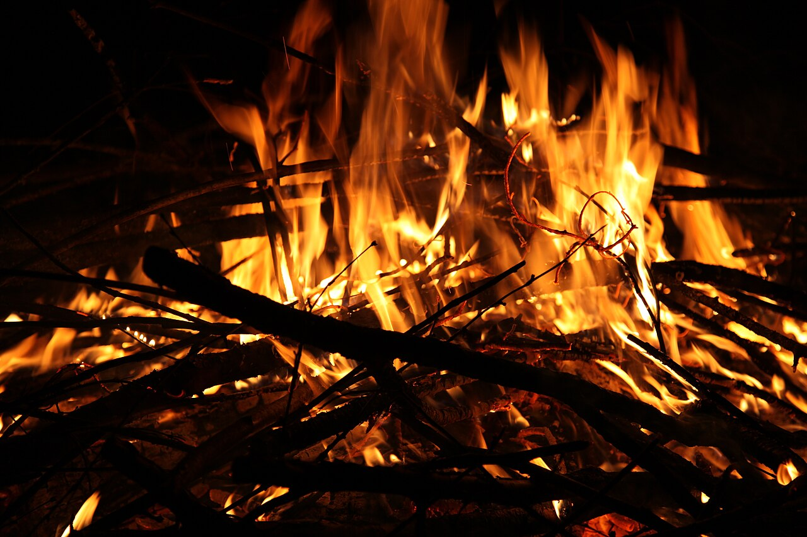
The challenge starts now.
This is an expedition still being built, not a finished package. The location has not been secured. Rights to build primitive structures still need to be negotiated. Access may involve a charter boat, helicopter, or a ten-mile hike. The rules, emergency system, training plan, gear limits, fishing strategy, and Expedition Command all still need to be built.
Build, adapt, endure
Teams establish separate camps, build primitive shelters, secure water, catch food, explore, solve problems, and document the entire story.
Food survival—with a clean tap-out
The food challenge is real. Participants live on what they legally catch, gather, or win. Anyone may opt out before the trip or tap out during it without shame, pressure, or judgment.
Part Alone. Part Outlast.
Ten-item kits, separate team camps, changing alliances, trades, hidden objectives, random rewards, family updates, AI Expedition Command, and cinematic self-filming.
Remote—but close enough to make participation realistic.
The expedition will take place in Washington State or coastal western Canada. The goal is a serious wilderness setting without turning this into an expensive destination trip. For the friends being invited, airfare is not expected to be part of the cost.
Pacific Northwest only
Candidate areas include remote Washington wilderness, Vancouver Island, coastal British Columbia, private islands, and legally authorized lake or shoreline properties.
Boat, helicopter, or trail
The final insertion may involve a charter boat, floatplane, helicopter drop, or a hike of up to approximately ten miles, depending on the property and legal access.
Helicopter cost will be subsidized
If helicopter access is required, Sean will subsidize that portion of the trip so the transportation method does not prevent the right people from participating.
The kind of country we are scouting.
The site is not secured yet, so these are reference photographs of candidate terrain— North Cascades high country, the roadless head of Lake Chelan, Vancouver Island's wilderness coast, and boat-access inlets in coastal British Columbia—plus the kind of primitive structures teams will actually build.
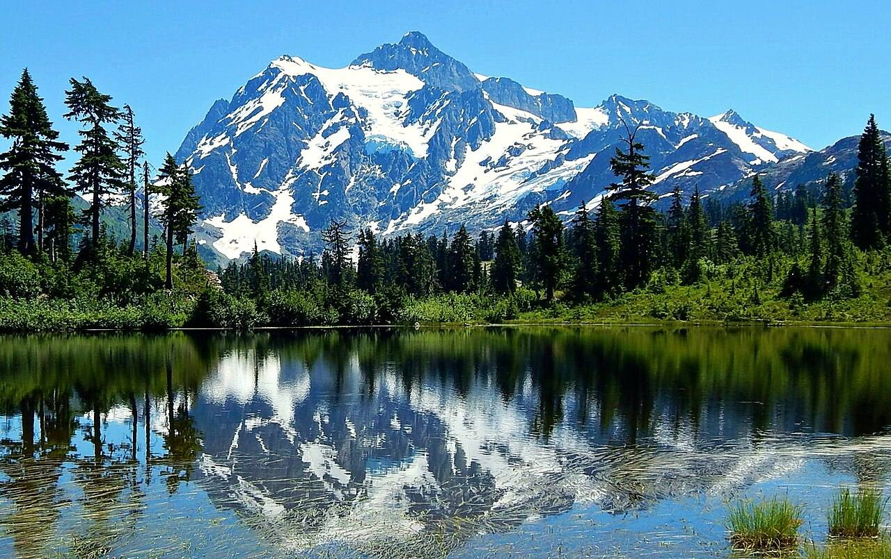
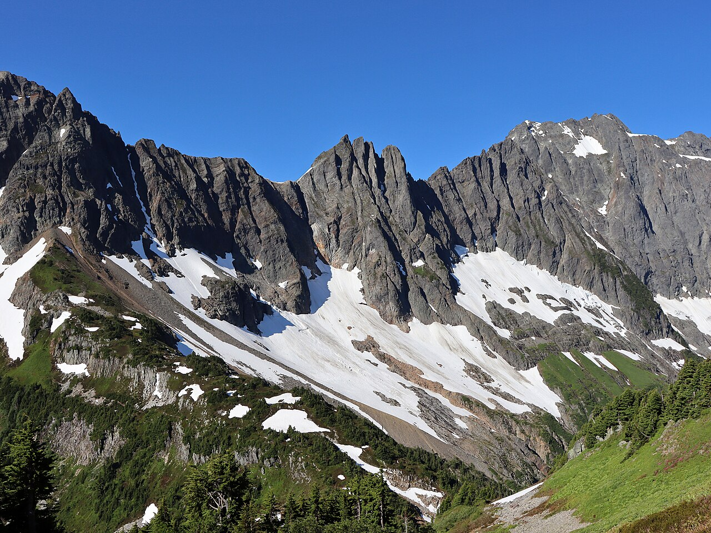
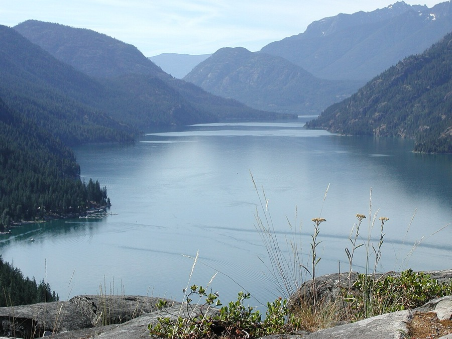
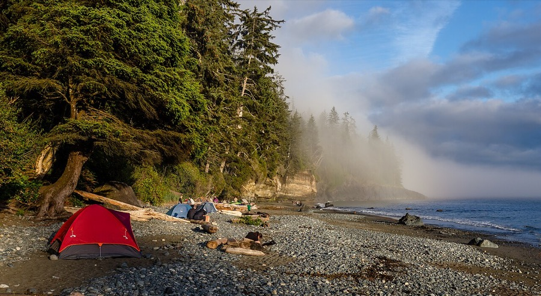
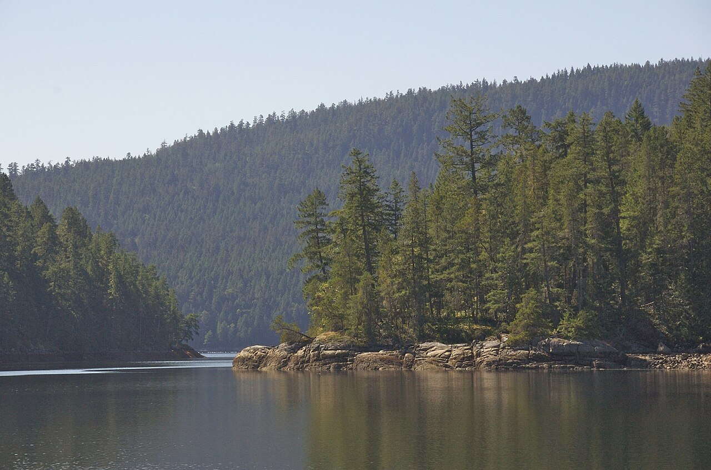
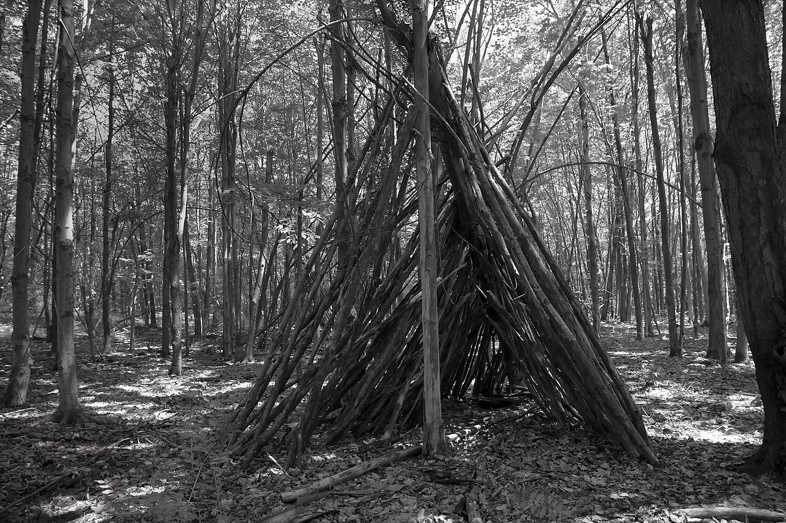
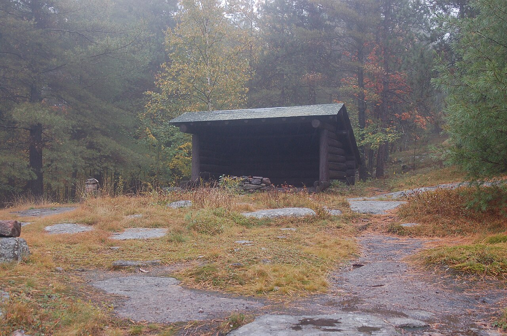
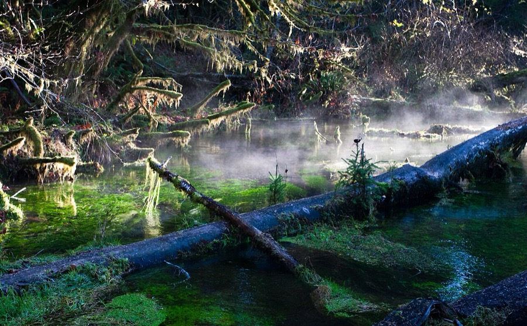
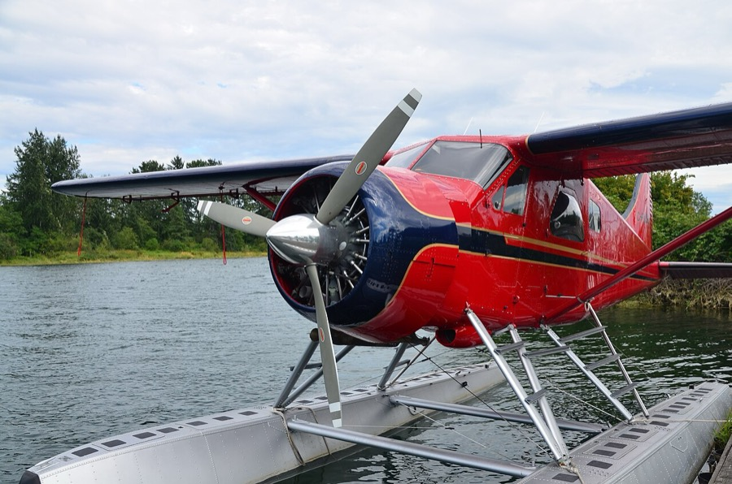
Reference photographs throughout the site via Wikimedia Commons: Marc Lautenbacher (CC BY-SA 4.0), PKThundr7 (CC BY 4.0), petebutt (CC BY-SA 3.0), USFWS (public domain), John Nathan Cobb, 1911 (public domain), Ron Clausen (CC BY-SA 4.0), Jeffhollett (CC BY-SA 4.0), David Ansley (CC BY 2.5), Michal Klajban (CC BY-SA 4.0), A.Davey (CC BY 2.0), Waqas Ahmed (CC BY-SA 3.0), Geotek (public domain). These show candidate regions and example builds—not the final site.
{kind=link}
.jpg){kind=link}
{kind=link}
{kind=link}
.jpeg){kind=link}
{kind=link}
{kind=link}
{kind=link}
{kind=link}
{kind=link}
.jpeg){kind=link}
{kind=link}
Stay in. Tap out. No shame either way.
The expedition is designed as a real food-survival game. Active players rely on what they legally catch, trap, forage, trade for, or win through challenges. But nobody is trapped in that choice.
Remain on the survival track
You stay in the food game and live only on approved wild food, earned rewards, and any allowed shared resources.
Move to the supported-food track
You may tap out at any time. You receive stored food, remain in the expedition, continue building, exploring, filming, and playing most challenges.
No pressure. No food flexing.
Tap-outs are not mocked, ranked as weak, pressured to stay in, or taunted with food. Supported food stays separate and is eaten discreetly away from active players.
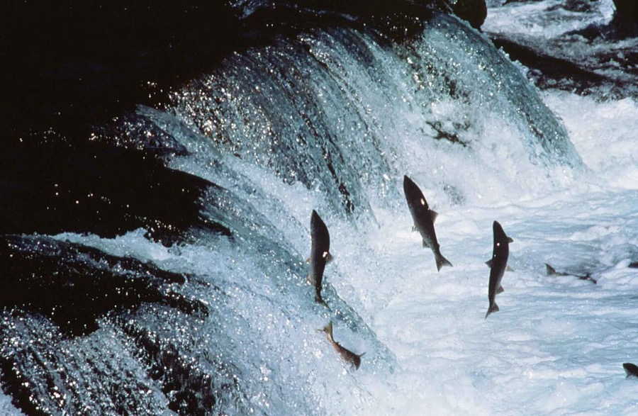
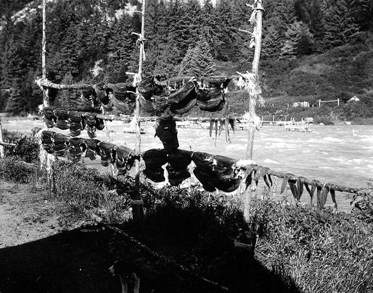
Safety design: a three-day calorie floor, with sealed emergency rations riding along. Nobody starves—we are choosing to earn dinner.
What do you bring?
Sean’s answer: figuring shit out and no quit. Yours may be expert fisherman, trapper, navigator, fire starter, shelter builder—or something nobody has thought to ask for yet.
Prep like it counts. Start now.
None of this requires a wilderness. It requires a backyard, a local lake, and fourteen months of not putting it off.
Ten filters every decision passes through.
Site selection, rules, gear calls, challenge design—if a decision fails one of these, it gets rethought.
Ten survival items. Safety gear does not count.
Nobody is sleeping wet in the rain with ten objects. Safety and warmth basics come free. The game only starts after you are equipped to be out there.
Not counted
- Clothing, boots & rain layers
- Life jackets where needed
- First aid & emergency medical gear
- Satellite communication
- Required bear protection
- Other mandated safety equipment
The ten items above are the starting example. Exact kit and sharing rules are still being designed.
Every contestant becomes part of the camera crew.
The goal is not just to survive the expedition. It is to preserve the entire story from each person’s point of view.
Meta glasses for every contestant
Each participant receives hands-free Meta glasses for first-person moments: first fires, fish catches, disagreements, discoveries, bad ideas, breakthroughs, and camp life.
Follow drones and aerial footage
Teams use compact tracking drones for hiking, paddling, camp reveals, shelter progress, exploration missions, and cinematic landscape shots.
Private camp confessionals
Each team records daily video journals covering hunger, morale, conflict, progress, strategy, team dynamics, and what they think Expedition Command may do next.
An AI runs the game.
Expedition Command is an AI agent we will build before departure. It reviews scheduled updates, photos, journals, GPS progress, challenge results, weather, and family messages—then shapes a one-of-a-kind expedition around what is actually happening.
Dynamic missions
Secret tasks, exploration objectives, engineering challenges, team trades, cooperation missions, and surprise rewards based on what is actually happening.
The Communications Hour — from day 5
Days one through four are a full disconnect. That is the detox, and it is the point. From day five on, Starlink comes online each evening and personal devices come out of the lockbox for exactly one hour—family, email, business, uploads. Then the timer kills the link. No extensions; Command does not negotiate.
Family follow-along
Approved photos, clips, status updates, maps, scores, and daily recaps are published to a private app for friends and family.
Expedition Command
— do not open —
until authorized
Mystery crates are cached and earned in the field. Inside might be coffee, chocolate, a premium lure, dry socks, steak seasoning, a better axe, playing cards—or nothing you expected. Only Expedition Command knows where they are, what they hold, and who has earned one.
What you are signing up for.
September 2027 is the finish line. Planning is the first challenge.
Winning is the smallest prize.
There will be scores, missions, mystery crates, and bragging rights—and somebody will win them. But success was never the scoreboard. Success is everyone coming home with:
Straight answers.
Anything not covered here is still being designed—ask, and help design it.
What does this actually cost me?
Rough planning numbers, not quotes. The ten-item kit: $0 if you borrow everything, roughly $300–$500 buying the core tools new—and used gear cuts that fast. Clothing, boots, and rain gear—most of us already own it; borrow before you buy. The region is drive-to by design, so no airfare. Boat charter gets split; if helicopter access is required, Sean subsidizes it. Rescue/evacuation insurance is the one line item everyone should expect—plan on $100–$200 a year, and we will pick one as a group.
What happens if someone gets seriously hurt?
We will not pick a site we cannot get someone out of fast—boat or helicopter, depending on where we land. Weather can slow that down, which is why satellite communication is on hand at all times, everyone gets medical screening before departure, and everyone carries rescue/evacuation insurance. If a real evacuation ever costs money that insurance does not cover, how we share that cost is a group conversation we will have before anyone steps on a boat.
Who sees the footage?
The expedition and our families—that is it. Raw footage goes to an AI or human editor briefed to cut a memorable 5–7 minutes per day, showing real emotion without putting anyone in a bad light. Vulnerability is fine. You personally re-approve your clips before the final edit, and nothing goes further unless the group decides otherwise.
How do I disappear for ten days?
If you have built your life well, the people around you will feel your absence—but nothing should crumble while you are gone. Expect real work in the weeks before departure to get your ducks in a row. The first four days are a clean break—no devices at all, and true emergencies reach the expedition through the satellite safety channel. From day five on, there is a Communications Hour every evening—Starlink on, your own devices in hand—to handle whatever actually needs you. The rest of the time, home cannot reach you and you cannot reach it. Set expectations before you leave.
What if I suck at survival? What if I have never fished?
Nobody is expected to arrive an expert—talents can be built in the field, and there is a one-night skills test in spring 2027 to practice before it counts. The only real ask is picking a skill and committing to improve it before September. Someone will teach you to fish.
What if nobody catches anything?
There is a three-day calorie floor, and sealed emergency rations travel with the expedition—nobody is going to actually starve out there. But we are not going into this with a failure mindset: the fish are there, and catching them is the game.
What if it rains the whole trip?
It might. September in the Pacific Northwest can rain five days straight. We build better shelters and keep going—the rain is where the stories come from.
How are teams picked?
Not decided yet. Could be drawing straws, random assignment by Expedition Command, or captains. If you have a strong opinion, this is exactly the kind of thing early joiners get to shape.
Can I leave early or quit the food game?
Yes to both, any time, no shame. Tap out of the food game and you stay a full expedition member on the supported-food track. Need to leave entirely? Getting you out is a design requirement, not a favor.
When do I have to commit?
Not today. Right now is about declaring interest and helping with setup—site scouting, rules design, gear research. Once the site is secured, spots get offered, starting with the people least likely to quit or complain. Raising your hand early and helping build it is how you end up at the top of that list.
What if only four people say yes?
It scales down—four to six works nearly as well. But the ideal is the full ten, because ten people around a fire in the wilderness playing deception and board games is the dream.
Request one of the nine places.
This is not a binding commitment yet. It is a declaration that a 10-day expedition in Washington or coastal western Canada excites you enough to help build it.
You do not need to be ready today.
You need to be willing to become ready by September 2027. The first challenge is not surviving the wilderness. It is building the team, securing the right place, learning the skills, and showing up prepared.